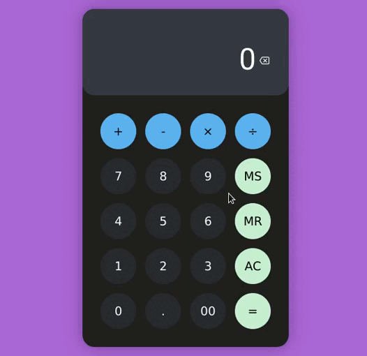

Como usar
Informe um número pressionando as teclas númericas da calculadora, em seguida escolha uma das quatro operações clicando na sua respectiva tecla, informe o segundo número e tecle em = para ver o resultado da conta.

Caso tenha teclado o número errado, vc pode apagar seu último algarismo teclando no botão
.
Por padrão, a calculadora vêm em cores mais escuras, mas caso queira você pode mudar o tema do prgrama para claro clicando no botão
,
e para voltar para o tema escuro basta clicar em
.
Teclas de ação
-
MS: Use para salvar o valor que está no visor, a fim de recuperá-lo posteriomente;
-
MR: Use para restaurar o valor guardado utilizando a tecla MS;
-
AC: Use para limpar o visor da calculadora.